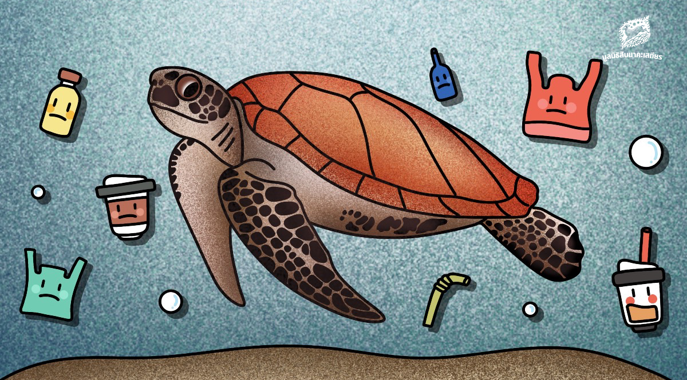

วันที่ 16 มิถุนายน ของทุกปีเป็น ‘วันเต่าทะเลโลก’ (World Sea Turtle Day) กำหนดขึ้นเพื่อปลูกจิตสำนึก และสร้างความตระหนักถึงความสำคัญของเต่าทะเล ร่วมกันอนุรักษ์เต่าทะเล เพื่อรักษาและคงความสมดุลของระบบนิเวศทางทะเลต่อไป
ปัจจุบัน พบว่าเต่าทะเลในประเทศไทยทั้ง 5 ชนิด เสี่ยงต่อการสูญพันธุ์ทั้งหมด โดยเต่ามะเฟืองเสี่ยงสูญพันธุ์มากที่สุด (Vulnerable) รองลงมา คือ เต่าหัวค้อน เต่าหญ้า เต่ากระ และเต่าตนุ ตามลำดับ
‘เต่ามะเฟือง’ ได้รับการขึ้นบัญชีเป็นสัตว์ป่าสงวน ส่วนเต่าทะเลอีก 4 ชนิด อยู่ในบัญชีสัตว์ป่าคุ้มครอง ตาม พรบ. สงวนและคุ้มครองสัตว์ป่า พ.ศ. 2562
- การอนุรักษ์ของวันเต่าทะเลโลก
ปัจจุบันประชากรเต่าทะเลมีแนวโน้มลดลงเรื่อยๆ เนื่องจากภัยคุกคามที่เพิ่มมากขึ้นในแต่ละปี โดยเฉพาะอย่างยิ่งปัญหา ‘ขยะพลาสติก’ ในท้องทะเล ที่เต่าทะเลกินเข้าไปจากลักษณะที่ดูคล้ายแมงกะพรุนที่เป็นอาหารหลักของเต่าทะเล ทำให้ขยะพลาสติกเข้าไปติดในระบบทางเดินอาหารและป่วย จนถึงแก่ชีวิตในที่สุด และอีกหนึ่งภัยคุกคามของเต่าทะเลที่เกิดจากกิจกรรมมนุษย์ ทั้งการทำประมงชายฝั่ง การพัฒนาพื้นที่ชายฝั่ง การสร้างกำแพงกันคลื่น ซึ่งเป็นการทำลายถิ่นที่อยู่อาศัย ส่งผลกระทบต่อจำนวนประชากรของเต่าทะเล รวมถึงการลักลอบเก็บไข่เต่าทะเลจากทั้งคนและสัตว์ชนิดต่างๆ เราทุกคนสามารถช่วยกันอนุรักษ์เต่าทะเลได้ง่ายๆ โดยการแยกและทิ้งขยะให้เป็นที่ ปกป้องพื้นที่ชายฝั่งทะเล รวมถึงการลงชื่อสนับสนุนแคมเปญสิ่งแวดล้อมต่างๆ เพื่อเป็นกระบอกเสียงนำไปสู่การผลักดันในระดับนโยบาย และการมีจิตสำนึกที่ดีต่อระบบนิเวศทางทะเล เมื่อเราเห็นความสำคัญ เราจะร่วมกันอนุรักษ์เต่าทะเลให้คงอยู่คู่ทะเลต่อไปในอนาคต อย่าให้เต่าทะเลต้องตายเพียงเพราะขยะพลาสติกอีกเลย มาร่วมกันอนุรักษ์เต่าทะเลกันเถอะ!